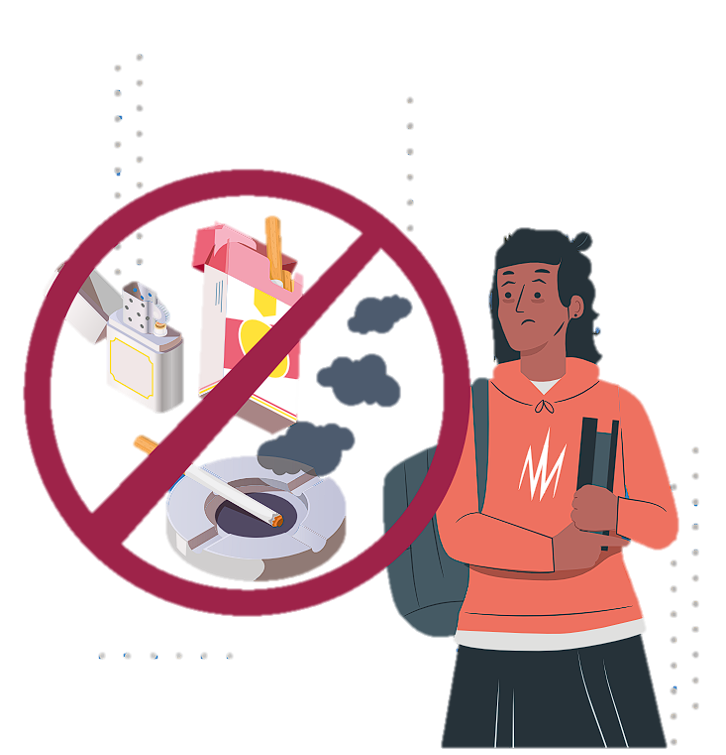

PROPÓSITO
Dar a conocer las características del tabaco, los daños irreversibles a la salud y los impactos negativos alrededor de su consumo.
¿QUE ES?
La nicotina es la sustancia que se extrae de las hojas del arbusto del tabaco.
Genera efectos estimulantes y tiene un alto nivel adictivo. Se comercializa en diversas presentaciones.
El consumo de nicotina altera la zona del cerebro responsable de modular los procesos de motivación, aprendizaje y ejecución. Además, este consumo se asocia con
trastornos de salud mental como episodios de ansiedad, síntomas depresivos, disminución del sueño y aumento de la vigilia.
En los últimos años el tabaquismo ha llegado a considerarse una pandemia y es un importante desafío
para la salud pública global. A nivel mundial, más de ocho millones de personas mueren al año a causa
de los daños provocados por el tabaco; de dichas muertes, 1.2 millones están asociadas a la exposición
al humo de segunda mano.

Efectos
EfectosEl consumo de nicotina puede producir sensación de relajación y de
estimulación. Sin embargo, el síndrome de abstinencia y el deseo
de consumir nuevamente se manifiestan al poco tiempo de iniciar su consumo.
Algunos de los síntomas del síndrome de abstinencia son ataques de ansiedad y episodios de depresión, somnolencia y problemas
para dormir. Además se presenta tensión, inquietud o frustración, dolores de cabeza, dificultad para concentrarse, incremento del apetito y
aumento de peso.
Principales daños irreversibles a la salud
Enfermedad Pulmonar Obstructiva Crónica (EPOC), neumonías, distintos tipos de cáncer, entre
ellos, el de pulmón; algunas enfermedades cardiacas, accidentes cerebrovasculares y enfermedades neurodegenerativas. Las
muertes asociadas al tabaquismo son consecuencia de dichas enfermedades.
En relación con los problemas físicos, el consumo de tabaco se
asocia con disfunción eréctil y alteración en la producción de espermatozoides en hombres. En
mujeres se reportan alteraciones fisiológicas que pueden ocasionar abortos espontáneos y partos
prematuros. Por último, se han detectado alteraciones en el Sistema Nervioso Central, específicamente
en el funcionamiento e interacción de diferentes regiones del cerebro a causa de la nicotina.
Daños del humo de segunda mano
El humo ajeno, de segunda mano o secundario es producido por personas fumadoras y es respirado por quienes están alrededor.
No existe una forma segura de exposición al humo ajeno. Incluso un breve tiempo puede causar daños,
como irritación ocular, mareos o náuseas. Por otra parte, la exposición repetida o habitual al humo
ajeno puede provocar enfermedades cardiovasculares, respiratorias graves y cáncer.
Las personas no fumadoras que conviven con personas consumidoras de productos de tabaco
corren un mayor riesgo de padecer ese tipo de enfermedades y
de morir prematuramente. Las y los lactantes y niños son especialmente susceptibles a padecer
enfermedades del sistema respiratorio, del oído medio, hasta síndrome de muerte súbita
¡EL TABACO PRODUCE
ENFERMEDADES MORTALES!
Ten presente que:
· El consumo de bebidas alcohólicas antes de los 15 años aumenta los riesgos en la salud y la probabilidad de desarrollar
una dependencia del alcohol y otras drogas.
· Beber alcohol de forma excesiva afecta la atención y la concentración en actividades diarias, incluidas las laborales y las
escolares; además reduce la capacidad de aprendizaje.
· Una intoxicación grave por alcohol puede causar inconsciencia, hipotermia, falta de reflejos, coma y posible muerte
por paro respiratorio.
Consecuencias legales
En 2023, el control de tabaco, principalmente de cigarrillos, se ha fortalecido. Las nuevas leyes multan
con más de 300,000 pesos la venta a menores de edad en cualquier tipo de establecimiento o sueltos.
Además, se ha prohibido la publicidad y exhibición de cigarrillos en todas las tiendas de conveniencia.